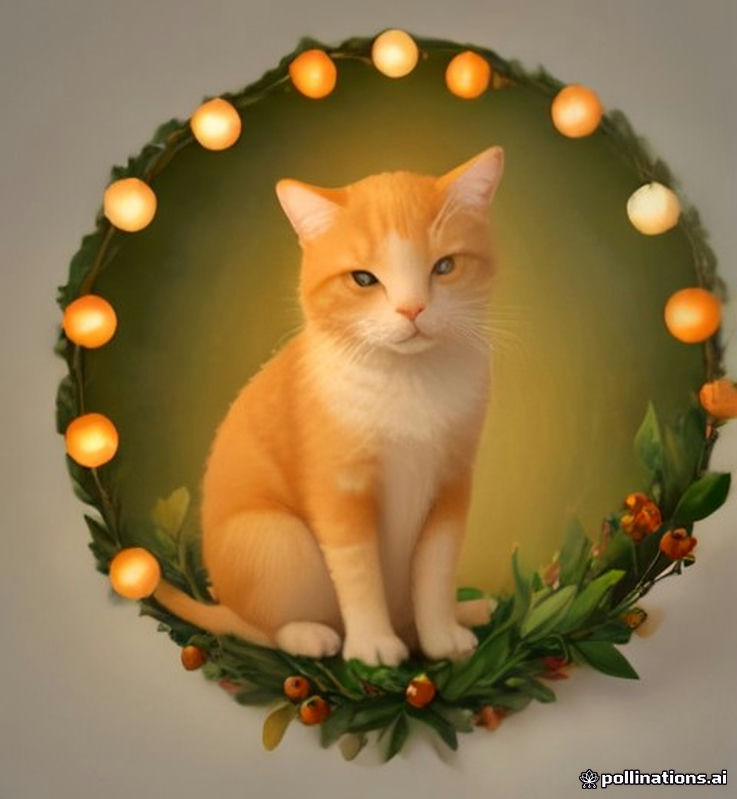
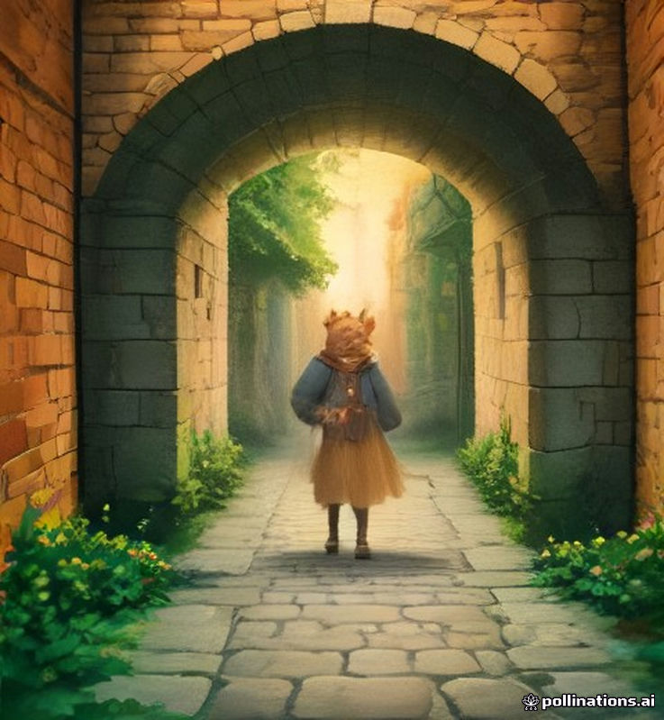
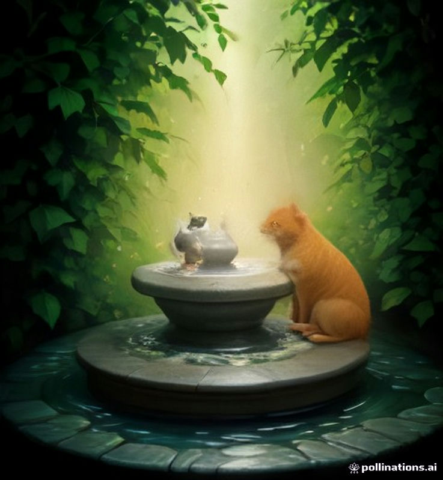
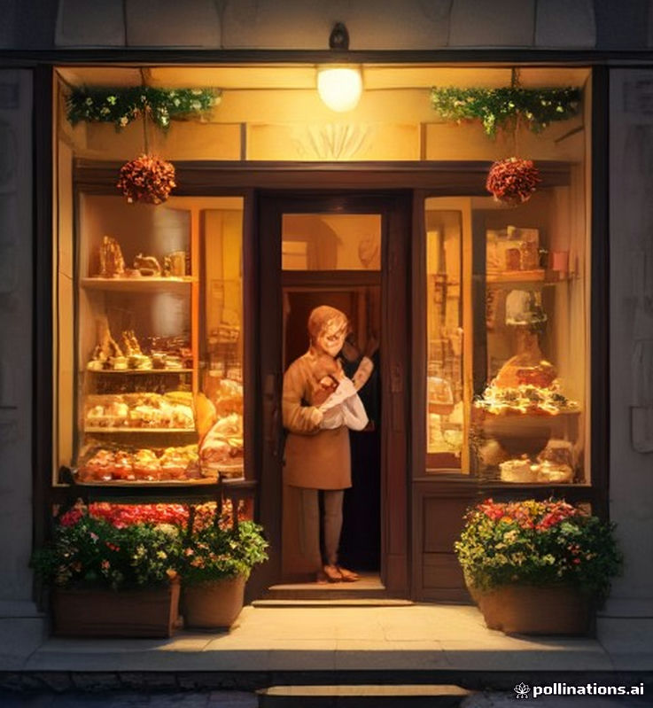
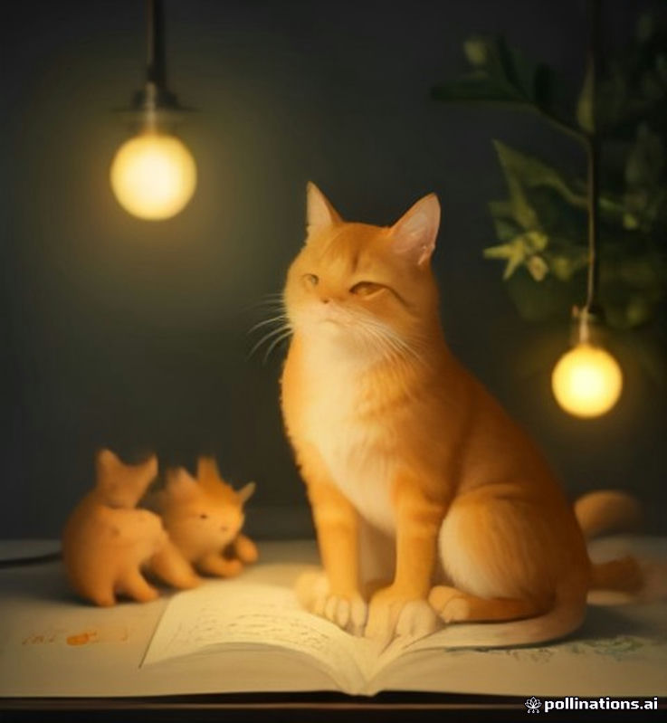

Loki and Pip search through every cozy corner of town to find the warmest, most welcoming home for their handmade holiday wreath.

The December breeze smelled like chimney smoke and crisp frost when Pip and I finished weaving our wreath. We used twisted willow sprigs, shiny dark holly leaves, and cluster upon cluster of bright scarlet berries. Pip tied a neat bow with frayed teal ribbon at the very bottom. 'Now,' Pip squeaked from between my ears, tapping my forehead with his tiny paw, 'where should our masterpiece hang?' We set off across the cobblestones, the wreath swinging gently between my paws, eager to greet every passerby with winter cheer.

First, we tested the big wooden door of the workshop. It looked sturdy and grand, but whenever the wind rattled the brass latch, the wreath tipped sideways with a clatter. 'A bit too drafty here,' I purred, nudging it upright with my whiskers. Next, we tried resting it on the stone rim of the plaza fountain. The water trickled softly, reflecting the winter clouds, but water droplets immediately splashed the leaves. 'Oh dear, soggy holly won't do at all,' Pip whispered into my fur. We shook off the mist and kept searching.

We scampered past the bakery windows, where the glass was warm from loaves of spiced gingerbread. Cinnamon steam curled through the keyhole, smelling heavenly. We propped the wreath against the flour barrel by the cafe door. It looked remarkably festive, but the bakery was already bursting with frosted ginger stars and candy twists. 'The wreath deserves a special place of its own,' Pip declared, tugging my left ear to turn me around. 'Somewhere quiet, where folks pause to rest their paws and read before twilight settles in.'

That was when we saw it: the wooden book stand right in the middle of town, sheltered beneath the gallery eaves. A small brass hook waited right above the polished cedar shelves. Carefully, standing on my hind paws while Pip stretched up to guide the teal loop, we slipped the wreath into place. The red berries glowed against the dark wood like tiny embers. Pip cheered and did a tiny spin atop my head. Anyone stopping to pick a holiday tale would feel completely at home, welcomed by winter greenery and friendly stories.